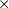
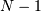

Python Types and C-Structures¶
Several new types are defined in the C-code. Most of these are accessible from Python, but a few are not exposed due to their limited use. Every new Python type has an associated PyObject * with an internal structure that includes a pointer to a “method table” that defines how the new object behaves in Python. When you receive a Python object into C code, you always get a pointer to a PyObject structure. Because a PyObject structure is very generic and defines only PyObject_HEAD, by itself it is not very interesting. However, different objects contain more details after the PyObject_HEAD (but you have to cast to the correct type to access them — or use accessor functions or macros).
New Python Types Defined¶
Python types are the functional equivalent in C of classes in Python. By constructing a new Python type you make available a new object for Python. The ndarray object is an example of a new type defined in C. New types are defined in C by two basic steps:
- creating a C-structure (usually named Py{Name}Object) that is binary- compatible with the PyObject structure itself but holds the additional information needed for that particular object;
- populating the PyTypeObject table (pointed to by the ob_type member of the PyObject structure) with pointers to functions that implement the desired behavior for the type.
Instead of special method names which define behavior for Python classes, there are “function tables” which point to functions that implement the desired results. Since Python 2.2, the PyTypeObject itself has become dynamic which allows C types that can be “sub-typed “from other C-types in C, and sub-classed in Python. The children types inherit the attributes and methods from their parent(s).
There are two major new types: the ndarray ( PyArray_Type ) and the ufunc ( PyUFunc_Type ). Additional types play a supportive role: the PyArrayIter_Type, the PyArrayMultiIter_Type, and the PyArrayDescr_Type . The PyArrayIter_Type is the type for a flat iterator for an ndarray (the object that is returned when getting the flat attribute). The PyArrayMultiIter_Type is the type of the object returned when calling broadcast (). It handles iteration and broadcasting over a collection of nested sequences. Also, the PyArrayDescr_Type is the data-type-descriptor type whose instances describe the data. Finally, there are 21 new scalar-array types which are new Python scalars corresponding to each of the fundamental data types available for arrays. An additional 10 other types are place holders that allow the array scalars to fit into a hierarchy of actual Python types.
PyArray_Type¶
- PyArrayObject¶
The PyArrayObject C-structure contains all of the required information for an array. All instances of an ndarray (and its subclasses) will have this structure. For future compatibility, these structure members should normally be accessed using the provided macros. If you need a shorter name, then you can make use of NPY_AO which is defined to be equivalent to PyArrayObject.
typedef struct PyArrayObject { PyObject_HEAD char *data; int nd; npy_intp *dimensions; npy_intp *strides; PyObject *base; PyArray_Descr *descr; int flags; PyObject *weakreflist; } PyArrayObject;
- char *PyArrayObject.data¶
A pointer to the first element of the array. This pointer can (and normally should) be recast to the data type of the array.
- int PyArrayObject.nd¶
An integer providing the number of dimensions for this array. When nd is 0, the array is sometimes called a rank-0 array. Such arrays have undefined dimensions and strides and cannot be accessed. NPY_MAXDIMS is the largest number of dimensions for any array.
- npy_intp PyArrayObject.dimensions¶
An array of integers providing the shape in each dimension as long as nd 1. The integer is always large enough to hold a pointer on the platform, so the dimension size is only limited by memory.
- npy_intp *PyArrayObject.strides¶
An array of integers providing for each dimension the number of bytes that must be skipped to get to the next element in that dimension.
- PyObject *PyArrayObject.base¶
This member is used to hold a pointer to another Python object that is related to this array. There are two use cases: 1) If this array does not own its own memory, then base points to the Python object that owns it (perhaps another array object), 2) If this array has the NPY_ARRAY_UPDATEIFCOPY flag set, then this array is a working copy of a “misbehaved” array. As soon as this array is deleted, the array pointed to by base will be updated with the contents of this array.
- PyArray_Descr *PyArrayObject.descr¶
A pointer to a data-type descriptor object (see below). The data-type descriptor object is an instance of a new built-in type which allows a generic description of memory. There is a descriptor structure for each data type supported. This descriptor structure contains useful information about the type as well as a pointer to a table of function pointers to implement specific functionality.
- int PyArrayObject.flags¶
Flags indicating how the memory pointed to by data is to be interpreted. Possible flags are NPY_ARRAY_C_CONTIGUOUS, NPY_ARRAY_F_CONTIGUOUS, NPY_ARRAY_OWNDATA, NPY_ARRAY_ALIGNED, NPY_ARRAY_WRITEABLE, and NPY_ARRAY_UPDATEIFCOPY.
PyArrayDescr_Type¶
- PyArray_Descr¶
The format of the PyArray_Descr structure that lies at the heart of the PyArrayDescr_Type is
typedef struct { PyObject_HEAD PyTypeObject *typeobj; char kind; char type; char byteorder; char unused; int flags; int type_num; int elsize; int alignment; PyArray_ArrayDescr *subarray; PyObject *fields; PyArray_ArrFuncs *f; } PyArray_Descr;
- PyTypeObject *PyArray_Descr.typeobj¶
Pointer to a typeobject that is the corresponding Python type for the elements of this array. For the builtin types, this points to the corresponding array scalar. For user-defined types, this should point to a user-defined typeobject. This typeobject can either inherit from array scalars or not. If it does not inherit from array scalars, then the NPY_USE_GETITEM and NPY_USE_SETITEM flags should be set in the flags member.
- char PyArray_Descr.kind¶
A character code indicating the kind of array (using the array interface typestring notation). A ‘b’ represents Boolean, a ‘i’ represents signed integer, a ‘u’ represents unsigned integer, ‘f’ represents floating point, ‘c’ represents complex floating point, ‘S’ represents 8-bit character string, ‘U’ represents 32-bit/character unicode string, and ‘V’ repesents arbitrary.
- char PyArray_Descr.type¶
A traditional character code indicating the data type.
- char PyArray_Descr.byteorder¶
A character indicating the byte-order: ‘>’ (big-endian), ‘<’ (little- endian), ‘=’ (native), ‘|’ (irrelevant, ignore). All builtin data- types have byteorder ‘=’.
- int PyArray_Descr.flags¶
A data-type bit-flag that determines if the data-type exhibits object- array like behavior. Each bit in this member is a flag which are named as:
- PyDataType_FLAGCHK(PyArray_Descr *dtype, int flags)¶
Return true if all the given flags are set for the data-type object.
- PyDataType_REFCHK(PyArray_Descr *dtype)¶
Equivalent to PyDataType_FLAGCHK (dtype, NPY_ITEM_REFCOUNT).
- int PyArray_Descr.type_num¶
A number that uniquely identifies the data type. For new data-types, this number is assigned when the data-type is registered.
- int PyArray_Descr.elsize¶
For data types that are always the same size (such as long), this holds the size of the data type. For flexible data types where different arrays can have a different elementsize, this should be 0.
- int PyArray_Descr.alignment¶
A number providing alignment information for this data type. Specifically, it shows how far from the start of a 2-element structure (whose first element is a char ), the compiler places an item of this type: offsetof(struct {char c; type v;}, v)
- PyArray_ArrayDescr *PyArray_Descr.subarray¶
If this is non- NULL, then this data-type descriptor is a C-style contiguous array of another data-type descriptor. In other-words, each element that this descriptor describes is actually an array of some other base descriptor. This is most useful as the data-type descriptor for a field in another data-type descriptor. The fields member should be NULL if this is non- NULL (the fields member of the base descriptor can be non- NULL however). The PyArray_ArrayDescr structure is defined using
typedef struct { PyArray_Descr *base; PyObject *shape; } PyArray_ArrayDescr;
The elements of this structure are:
- PyArray_Descr *PyArray_ArrayDescr.base¶
The data-type-descriptor object of the base-type.
- PyObject *PyArray_Descr.fields¶
If this is non-NULL, then this data-type-descriptor has fields described by a Python dictionary whose keys are names (and also titles if given) and whose values are tuples that describe the fields. Recall that a data-type-descriptor always describes a fixed-length set of bytes. A field is a named sub-region of that total, fixed-length collection. A field is described by a tuple composed of another data- type-descriptor and a byte offset. Optionally, the tuple may contain a title which is normally a Python string. These tuples are placed in this dictionary keyed by name (and also title if given).
- PyArray_ArrFuncs *PyArray_Descr.f¶
A pointer to a structure containing functions that the type needs to implement internal features. These functions are not the same thing as the universal functions (ufuncs) described later. Their signatures can vary arbitrarily.
- PyArray_ArrFuncs¶
Functions implementing internal features. Not all of these function pointers must be defined for a given type. The required members are nonzero, copyswap, copyswapn, setitem, getitem, and cast. These are assumed to be non- NULL and NULL entries will cause a program crash. The other functions may be NULL which will just mean reduced functionality for that data-type. (Also, the nonzero function will be filled in with a default function if it is NULL when you register a user-defined data-type).
typedef struct { PyArray_VectorUnaryFunc *cast[NPY_NTYPES]; PyArray_GetItemFunc *getitem; PyArray_SetItemFunc *setitem; PyArray_CopySwapNFunc *copyswapn; PyArray_CopySwapFunc *copyswap; PyArray_CompareFunc *compare; PyArray_ArgFunc *argmax; PyArray_DotFunc *dotfunc; PyArray_ScanFunc *scanfunc; PyArray_FromStrFunc *fromstr; PyArray_NonzeroFunc *nonzero; PyArray_FillFunc *fill; PyArray_FillWithScalarFunc *fillwithscalar; PyArray_SortFunc *sort[NPY_NSORTS]; PyArray_ArgSortFunc *argsort[NPY_NSORTS]; PyObject *castdict; PyArray_ScalarKindFunc *scalarkind; int **cancastscalarkindto; int *cancastto; PyArray_FastClipFunc *fastclip; PyArray_FastPutmaskFunc *fastputmask; PyArray_FastTakeFunc *fasttake; PyArray_ArgFunc *argmin; } PyArray_ArrFuncs;
The concept of a behaved segment is used in the description of the function pointers. A behaved segment is one that is aligned and in native machine byte-order for the data-type. The nonzero, copyswap, copyswapn, getitem, and setitem functions can (and must) deal with mis-behaved arrays. The other functions require behaved memory segments.
- void cast(void *from, void *to, npy_intp n, void *fromarr, void *toarr)¶
An array of function pointers to cast from the current type to all of the other builtin types. Each function casts a contiguous, aligned, and notswapped buffer pointed at by from to a contiguous, aligned, and notswapped buffer pointed at by to The number of items to cast is given by n, and the arguments fromarr and toarr are interpreted as PyArrayObjects for flexible arrays to get itemsize information.
- PyObject *getitem(void *data, void *arr)¶
A pointer to a function that returns a standard Python object from a single element of the array object arr pointed to by data. This function must be able to deal with “misbehaved “(misaligned and/or swapped) arrays correctly.
- int setitem(PyObject *item, void *data, void *arr)¶
A pointer to a function that sets the Python object item into the array, arr, at the position pointed to by data . This function deals with “misbehaved” arrays. If successful, a zero is returned, otherwise, a negative one is returned (and a Python error set).
- void copyswapn(void *dest, npy_intp dstride, void *src, npy_intp sstride, npy_intp n, int swap, void *arr)¶
- void copyswap(void *dest, void *src, int swap, void *arr)¶
These members are both pointers to functions to copy data from src to dest and swap if indicated. The value of arr is only used for flexible ( NPY_STRING, NPY_UNICODE, and NPY_VOID ) arrays (and is obtained from arr->descr->elsize ). The second function copies a single value, while the first loops over n values with the provided strides. These functions can deal with misbehaved src data. If src is NULL then no copy is performed. If swap is 0, then no byteswapping occurs. It is assumed that dest and src do not overlap. If they overlap, then use memmove (...) first followed by copyswap(n) with NULL valued src.
- int compare(const void* d1, const void* d2, void* arr)¶
A pointer to a function that compares two elements of the array, arr, pointed to by d1 and d2. This function requires behaved (aligned and not swapped) arrays. The return value is 1 if * d1 > * d2, 0 if * d1 == * d2, and -1 if * d1 < * d2. The array object arr is used to retrieve itemsize and field information for flexible arrays.
- int argmax(void* data, npy_intp n, npy_intp* max_ind, void* arr)¶
A pointer to a function that retrieves the index of the largest of n elements in arr beginning at the element pointed to by data. This function requires that the memory segment be contiguous and behaved. The return value is always 0. The index of the largest element is returned in max_ind.
- void dotfunc(void* ip1, npy_intp is1, void* ip2, npy_intp is2, void* op, npy_intp n, void* arr)¶
A pointer to a function that multiplies two n -length sequences together, adds them, and places the result in element pointed to by op of arr. The start of the two sequences are pointed to by ip1 and ip2. To get to the next element in each sequence requires a jump of is1 and is2 bytes, respectively. This function requires behaved (though not necessarily contiguous) memory.
- int scanfunc(FILE* fd, void* ip, void* sep, void* arr)¶
A pointer to a function that scans (scanf style) one element of the corresponding type from the file descriptor fd into the array memory pointed to by ip. The array is assumed to be behaved. If sep is not NULL, then a separator string is also scanned from the file before returning. The last argument arr is the array to be scanned into. A 0 is returned if the scan is successful. A negative number indicates something went wrong: -1 means the end of file was reached before the separator string could be scanned, -4 means that the end of file was reached before the element could be scanned, and -3 means that the element could not be interpreted from the format string. Requires a behaved array.
- int fromstr(char* str, void* ip, char** endptr, void* arr)¶
A pointer to a function that converts the string pointed to by str to one element of the corresponding type and places it in the memory location pointed to by ip. After the conversion is completed, *endptr points to the rest of the string. The last argument arr is the array into which ip points (needed for variable-size data- types). Returns 0 on success or -1 on failure. Requires a behaved array.
- Bool nonzero(void* data, void* arr)¶
A pointer to a function that returns TRUE if the item of arr pointed to by data is nonzero. This function can deal with misbehaved arrays.
- void fill(void* data, npy_intp length, void* arr)¶
A pointer to a function that fills a contiguous array of given length with data. The first two elements of the array must already be filled- in. From these two values, a delta will be computed and the values from item 3 to the end will be computed by repeatedly adding this computed delta. The data buffer must be well-behaved.
- void fillwithscalar(void* buffer, npy_intp length, void* value, void* arr)¶
A pointer to a function that fills a contiguous buffer of the given length with a single scalar value whose address is given. The final argument is the array which is needed to get the itemsize for variable-length arrays.
- int sort(void* start, npy_intp length, void* arr)¶
An array of function pointers to a particular sorting algorithms. A particular sorting algorithm is obtained using a key (so far NPY_QUICKSORT, :data`NPY_HEAPSORT`, and NPY_MERGESORT are defined). These sorts are done in-place assuming contiguous and aligned data.
- int argsort(void* start, npy_intp* result, npy_intp length, void *arr)¶
An array of function pointers to sorting algorithms for this data type. The same sorting algorithms as for sort are available. The indices producing the sort are returned in result (which must be initialized with indices 0 to length-1 inclusive).
- PyObject *castdict¶
Either NULL or a dictionary containing low-level casting functions for user- defined data-types. Each function is wrapped in a PyCObject * and keyed by the data-type number.
- NPY_SCALARKIND scalarkind(PyArrayObject* arr)¶
A function to determine how scalars of this type should be interpreted. The argument is NULL or a 0-dimensional array containing the data (if that is needed to determine the kind of scalar). The return value must be of type NPY_SCALARKIND.
- int **cancastscalarkindto¶
Either NULL or an array of NPY_NSCALARKINDS pointers. These pointers should each be either NULL or a pointer to an array of integers (terminated by NPY_NOTYPE) indicating data-types that a scalar of this data-type of the specified kind can be cast to safely (this usually means without losing precision).
- int *cancastto¶
Either NULL or an array of integers (terminated by NPY_NOTYPE ) indicated data-types that this data-type can be cast to safely (this usually means without losing precision).
- void fastclip(void *in, npy_intp n_in, void *min, void *max, void *out)¶
A function that reads n_in items from in, and writes to out the read value if it is within the limits pointed to by min and max, or the corresponding limit if outside. The memory segments must be contiguous and behaved, and either min or max may be NULL, but not both.
- void fastputmask(void *in, void *mask, npy_intp n_in, void *values, npy_intp nv)¶
A function that takes a pointer in to an array of n_in items, a pointer mask to an array of n_in boolean values, and a pointer vals to an array of nv items. Items from vals are copied into in wherever the value in mask is non-zero, tiling vals as needed if nv < n_in. All arrays must be contiguous and behaved.
- void fasttake(void *dest, void *src, npy_intp *indarray, npy_intp nindarray, npy_intp n_outer, npy_intp m_middle, npy_intp nelem, NPY_CLIPMODE clipmode)¶
A function that takes a pointer src to a C contiguous, behaved segment, interpreted as a 3-dimensional array of shape (n_outer, nindarray, nelem), a pointer indarray to a contiguous, behaved segment of m_middle integer indices, and a pointer dest to a C contiguous, behaved segment, interpreted as a 3-dimensional array of shape (n_outer, m_middle, nelem). The indices in indarray are used to index src along the second dimension, and copy the corresponding chunks of nelem items into dest. clipmode (which can take on the values NPY_RAISE, NPY_WRAP or NPY_CLIP) determines how will indices smaller than 0 or larger than nindarray will be handled.
- int argmin(void* data, npy_intp n, npy_intp* min_ind, void* arr)¶
A pointer to a function that retrieves the index of the smallest of n elements in arr beginning at the element pointed to by data. This function requires that the memory segment be contiguous and behaved. The return value is always 0. The index of the smallest element is returned in min_ind.
The PyArray_Type typeobject implements many of the features of Python objects including the tp_as_number, tp_as_sequence, tp_as_mapping, and tp_as_buffer interfaces. The rich comparison (tp_richcompare) is also used along with new-style attribute lookup for methods (tp_methods) and properties (tp_getset). The PyArray_Type can also be sub-typed.
Tip
The tp_as_number methods use a generic approach to call whatever function has been registered for handling the operation. The function PyNumeric_SetOps(..) can be used to register functions to handle particular mathematical operations (for all arrays). When the umath module is imported, it sets the numeric operations for all arrays to the corresponding ufuncs. The tp_str and tp_repr methods can also be altered using PyString_SetStringFunction(...).
PyUFunc_Type¶
- PyUFuncObject¶
The core of the ufunc is the PyUFuncObject which contains all the information needed to call the underlying C-code loops that perform the actual work. It has the following structure:
typedef struct { PyObject_HEAD int nin; int nout; int nargs; int identity; PyUFuncGenericFunction *functions; void **data; int ntypes; int check_return; const char *name; char *types; const char *doc; void *ptr; PyObject *obj; PyObject *userloops; npy_uint32 *op_flags; npy_uint32 *iter_flags; } PyUFuncObject;
- int PyUFuncObject.nin¶
The number of input arguments.
- int PyUFuncObject.nout¶
The number of output arguments.
- int PyUFuncObject.nargs¶
The total number of arguments (nin + nout). This must be less than NPY_MAXARGS.
- int PyUFuncObject.identity¶
Either PyUFunc_One, PyUFunc_Zero, or PyUFunc_None to indicate the identity for this operation. It is only used for a reduce-like call on an empty array.
- void PyUFuncObject.functions(char** args, npy_intp* dims,
- npy_intp* steps, void* extradata)
An array of function pointers — one for each data type supported by the ufunc. This is the vector loop that is called to implement the underlying function dims [0] times. The first argument, args, is an array of nargs pointers to behaved memory. Pointers to the data for the input arguments are first, followed by the pointers to the data for the output arguments. How many bytes must be skipped to get to the next element in the sequence is specified by the corresponding entry in the steps array. The last argument allows the loop to receive extra information. This is commonly used so that a single, generic vector loop can be used for multiple functions. In this case, the actual scalar function to call is passed in as extradata. The size of this function pointer array is ntypes.
- void **PyUFuncObject.data¶
Extra data to be passed to the 1-d vector loops or NULL if no extra-data is needed. This C-array must be the same size ( i.e. ntypes) as the functions array. NULL is used if extra_data is not needed. Several C-API calls for UFuncs are just 1-d vector loops that make use of this extra data to receive a pointer to the actual function to call.
- int PyUFuncObject.ntypes¶
The number of supported data types for the ufunc. This number specifies how many different 1-d loops (of the builtin data types) are available.
- int PyUFuncObject.check_return¶
Obsolete and unused. However, it is set by the corresponding entry in the main ufunc creation routine: PyUFunc_FromFuncAndData (...).
- char *PyUFuncObject.name¶
A string name for the ufunc. This is used dynamically to build the __doc__ attribute of ufuncs.
- char *PyUFuncObject.types¶
An array of nargs  ntypes 8-bit type_numbers which contains the type signature for the function for each of the supported (builtin) data types. For each of the ntypes functions, the corresponding set of type numbers in this array shows how the args argument should be interpreted in the 1-d vector loop. These type numbers do not have to be the same type and mixed-type ufuncs are supported.
- char *PyUFuncObject.doc¶
Documentation for the ufunc. Should not contain the function signature as this is generated dynamically when __doc__ is retrieved.
- void *PyUFuncObject.ptr¶
Any dynamically allocated memory. Currently, this is used for dynamic ufuncs created from a python function to store room for the types, data, and name members.
- PyObject *PyUFuncObject.obj¶
For ufuncs dynamically created from python functions, this member holds a reference to the underlying Python function.
- PyObject *PyUFuncObject.userloops¶
A dictionary of user-defined 1-d vector loops (stored as CObject ptrs) for user-defined types. A loop may be registered by the user for any user-defined type. It is retrieved by type number. User defined type numbers are always larger than NPY_USERDEF.
- npy_uint32 PyUFuncObject.op_flags¶
Override the default operand flags for each ufunc operand.
- npy_uint32 PyUFuncObject.iter_flags¶
Override the default nditer flags for the ufunc.
PyArrayIter_Type¶
- PyArrayIterObject¶
The C-structure corresponding to an object of PyArrayIter_Type is the PyArrayIterObject. The PyArrayIterObject is used to keep track of a pointer into an N-dimensional array. It contains associated information used to quickly march through the array. The pointer can be adjusted in three basic ways: 1) advance to the “next” position in the array in a C-style contiguous fashion, 2) advance to an arbitrary N-dimensional coordinate in the array, and 3) advance to an arbitrary one-dimensional index into the array. The members of the PyArrayIterObject structure are used in these calculations. Iterator objects keep their own dimension and strides information about an array. This can be adjusted as needed for “broadcasting,” or to loop over only specific dimensions.
typedef struct { PyObject_HEAD int nd_m1; npy_intp index; npy_intp size; npy_intp coordinates[NPY_MAXDIMS]; npy_intp dims_m1[NPY_MAXDIMS]; npy_intp strides[NPY_MAXDIMS]; npy_intp backstrides[NPY_MAXDIMS]; npy_intp factors[NPY_MAXDIMS]; PyArrayObject *ao; char *dataptr; Bool contiguous; } PyArrayIterObject;
- int PyArrayIterObject.nd_m1¶
 where
 is the number of dimensions in the
underlying array.
is the number of dimensions in the
underlying array.
- npy_intp PyArrayIterObject.index¶
The current 1-d index into the array.
- npy_intp PyArrayIterObject.size¶
The total size of the underlying array.
- npy_intp *PyArrayIterObject.coordinates¶
An
-dimensional index into the array.
- npy_intp *PyArrayIterObject.dims_m1¶
The size of the array minus 1 in each dimension.
- npy_intp *PyArrayIterObject.strides¶
The strides of the array. How many bytes needed to jump to the next element in each dimension.
- npy_intp *PyArrayIterObject.backstrides¶
How many bytes needed to jump from the end of a dimension back to its beginning. Note that backstrides [k]= strides [k]*d ims_m1 [k], but it is stored here as an optimization.
- npy_intp *PyArrayIterObject.factors¶
This array is used in computing an N-d index from a 1-d index. It contains needed products of the dimensions.
- PyArrayObject *PyArrayIterObject.ao¶
A pointer to the underlying ndarray this iterator was created to represent.
- char *PyArrayIterObject.dataptr¶
This member points to an element in the ndarray indicated by the index.
- Bool PyArrayIterObject.contiguous¶
This flag is true if the underlying array is NPY_ARRAY_C_CONTIGUOUS. It is used to simplify calculations when possible.
How to use an array iterator on a C-level is explained more fully in later sections. Typically, you do not need to concern yourself with the internal structure of the iterator object, and merely interact with it through the use of the macros PyArray_ITER_NEXT (it), PyArray_ITER_GOTO (it, dest), or PyArray_ITER_GOTO1D (it, index). All of these macros require the argument it to be a PyArrayIterObject *.
PyArrayMultiIter_Type¶
- PyArrayMultiIterObject¶
typedef struct { PyObject_HEAD int numiter; npy_intp size; npy_intp index; int nd; npy_intp dimensions[NPY_MAXDIMS]; PyArrayIterObject *iters[NPY_MAXDIMS]; } PyArrayMultiIterObject;
- int PyArrayMultiIterObject.numiter¶
The number of arrays that need to be broadcast to the same shape.
- npy_intp PyArrayMultiIterObject.size¶
The total broadcasted size.
- npy_intp PyArrayMultiIterObject.index¶
The current (1-d) index into the broadcasted result.
- int PyArrayMultiIterObject.nd¶
The number of dimensions in the broadcasted result.
- npy_intp *PyArrayMultiIterObject.dimensions¶
The shape of the broadcasted result (only nd slots are used).
- PyArrayIterObject **PyArrayMultiIterObject.iters¶
An array of iterator objects that holds the iterators for the arrays to be broadcast together. On return, the iterators are adjusted for broadcasting.
PyArrayNeighborhoodIter_Type¶
- PyArrayNeighborhoodIterObject¶
The C-structure corresponding to an object of PyArrayNeighborhoodIter_Type is the PyArrayNeighborhoodIterObject.
PyArrayFlags_Type¶
ScalarArrayTypes¶
There is a Python type for each of the different built-in data types that can be present in the array Most of these are simple wrappers around the corresponding data type in C. The C-names for these types are Py{TYPE}ArrType_Type where {TYPE} can be
Bool, Byte, Short, Int, Long, LongLong, UByte, UShort, UInt, ULong, ULongLong, Half, Float, Double, LongDouble, CFloat, CDouble, CLongDouble, String, Unicode, Void, and Object.
These type names are part of the C-API and can therefore be created in extension C-code. There is also a PyIntpArrType_Type and a PyUIntpArrType_Type that are simple substitutes for one of the integer types that can hold a pointer on the platform. The structure of these scalar objects is not exposed to C-code. The function PyArray_ScalarAsCtype (..) can be used to extract the C-type value from the array scalar and the function PyArray_Scalar (...) can be used to construct an array scalar from a C-value.
Other C-Structures¶
A few new C-structures were found to be useful in the development of NumPy. These C-structures are used in at least one C-API call and are therefore documented here. The main reason these structures were defined is to make it easy to use the Python ParseTuple C-API to convert from Python objects to a useful C-Object.
PyArray_Dims¶
- PyArray_Dims¶
This structure is very useful when shape and/or strides information is supposed to be interpreted. The structure is:
typedef struct { npy_intp *ptr; int len; } PyArray_Dims;
The members of this structure are
- npy_intp *PyArray_Dims.ptr¶
A pointer to a list of (npy_intp) integers which usually represent array shape or array strides.
- int PyArray_Dims.len¶
The length of the list of integers. It is assumed safe to access ptr [0] to ptr [len-1].
PyArray_Chunk¶
- PyArray_Chunk¶
This is equivalent to the buffer object structure in Python up to the ptr member. On 32-bit platforms (i.e. if NPY_SIZEOF_INT == NPY_SIZEOF_INTP), the len member also matches an equivalent member of the buffer object. It is useful to represent a generic single-segment chunk of memory.
typedef struct { PyObject_HEAD PyObject *base; void *ptr; npy_intp len; int flags; } PyArray_Chunk;
The members are
- PyObject *PyArray_Chunk.base¶
The Python object this chunk of memory comes from. Needed so that memory can be accounted for properly.
- void *PyArray_Chunk.ptr¶
A pointer to the start of the single-segment chunk of memory.
- npy_intp PyArray_Chunk.len¶
The length of the segment in bytes.
- int PyArray_Chunk.flags¶
Any data flags (e.g. NPY_ARRAY_WRITEABLE ) that should be used to interpret the memory.
PyArrayInterface¶
See also
- PyArrayInterface¶
The PyArrayInterface structure is defined so that NumPy and other extension modules can use the rapid array interface protocol. The __array_struct__ method of an object that supports the rapid array interface protocol should return a PyCObject that contains a pointer to a PyArrayInterface structure with the relevant details of the array. After the new array is created, the attribute should be DECREF‘d which will free the PyArrayInterface structure. Remember to INCREF the object (whose __array_struct__ attribute was retrieved) and point the base member of the new PyArrayObject to this same object. In this way the memory for the array will be managed correctly.
typedef struct { int two; int nd; char typekind; int itemsize; int flags; npy_intp *shape; npy_intp *strides; void *data; PyObject *descr; } PyArrayInterface;
- int PyArrayInterface.two¶
the integer 2 as a sanity check.
- int PyArrayInterface.nd¶
the number of dimensions in the array.
- char PyArrayInterface.typekind¶
A character indicating what kind of array is present according to the typestring convention with ‘t’ -> bitfield, ‘b’ -> Boolean, ‘i’ -> signed integer, ‘u’ -> unsigned integer, ‘f’ -> floating point, ‘c’ -> complex floating point, ‘O’ -> object, ‘S’ -> (byte-)string, ‘U’ -> unicode, ‘V’ -> void.
- int PyArrayInterface.itemsize¶
The number of bytes each item in the array requires.
- int PyArrayInterface.flags¶
Any of the bits NPY_ARRAY_C_CONTIGUOUS (1), NPY_ARRAY_F_CONTIGUOUS (2), NPY_ARRAY_ALIGNED (0x100), NPY_ARRAY_NOTSWAPPED (0x200), or NPY_ARRAY_WRITEABLE (0x400) to indicate something about the data. The NPY_ARRAY_ALIGNED, NPY_ARRAY_C_CONTIGUOUS, and NPY_ARRAY_F_CONTIGUOUS flags can actually be determined from the other parameters. The flag NPY_ARR_HAS_DESCR (0x800) can also be set to indicate to objects consuming the version 3 array interface that the descr member of the structure is present (it will be ignored by objects consuming version 2 of the array interface).
- npy_intp *PyArrayInterface.shape¶
An array containing the size of the array in each dimension.
- npy_intp *PyArrayInterface.strides¶
An array containing the number of bytes to jump to get to the next element in each dimension.
- void *PyArrayInterface.data¶
A pointer to the first element of the array.
- PyObject *PyArrayInterface.descr¶
A Python object describing the data-type in more detail (same as the descr key in __array_interface__). This can be NULL if typekind and itemsize provide enough information. This field is also ignored unless ARR_HAS_DESCR flag is on in flags.
Internally used structures¶
Internally, the code uses some additional Python objects primarily for memory management. These types are not accessible directly from Python, and are not exposed to the C-API. They are included here only for completeness and assistance in understanding the code.
- PyUFuncLoopObject¶
A loose wrapper for a C-structure that contains the information needed for looping. This is useful if you are trying to understand the ufunc looping code. The PyUFuncLoopObject is the associated C-structure. It is defined in the ufuncobject.h header.
- PyUFuncReduceObject¶
A loose wrapper for the C-structure that contains the information needed for reduce-like methods of ufuncs. This is useful if you are trying to understand the reduce, accumulate, and reduce-at code. The PyUFuncReduceObject is the associated C-structure. It is defined in the ufuncobject.h header.
- PyUFunc_Loop1d¶
A simple linked-list of C-structures containing the information needed to define a 1-d loop for a ufunc for every defined signature of a user-defined data-type.